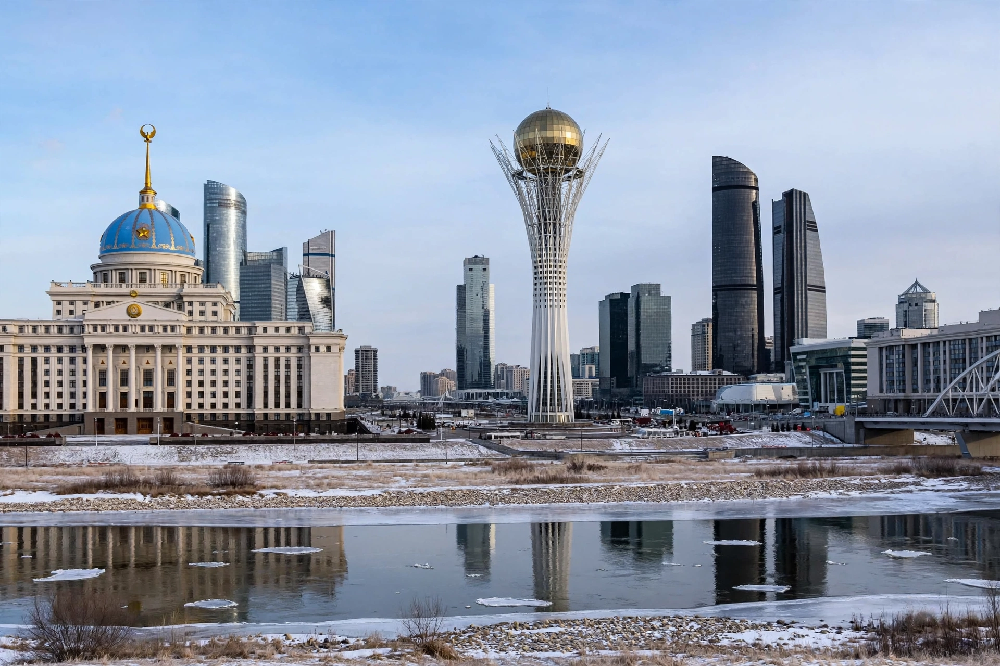

[Image placeholder: The Bayterek tower and the Ak Orda presidential palace, Astana]| Country | Kazakhstan |
|---|---|
| Former names | Akmolinsk; Tselinograd; Akmola; Nur-Sultan (2019–2022) |
| Population | About 1.4 million (estimates) |
| Founded | 1830; capital since 1997 |
**Astana** is the capital city of Kazakhstan, on the banks of the Ishim River in the northern steppe. One of the world's coldest capitals, with winter temperatures below −35 °C, it was a modest Soviet-era city (Tselinograd) until President Nursultan Nazarbayev moved the capital from Almaty in 1997 and master-planned a futuristic new administrative city on the left bank.
Its skyline of trophy architecture includes Norman Foster's pyramid-shaped Palace of Peace and Reconciliation and the glass tent of Khan Shatyr, and the Bayterek tower, symbol of the Kazakh legend of the tree of life. The city was renamed Nur-Sultan in 2019, honouring Nazarbayev, and renamed back to Astana in 2022 after the January unrest and Nazarbayev's fall from influence.
Founded in 1830 as the Russian outpost Akmolinsk, it became Tselinograd, centre of Khrushchev's Virgin Lands grain campaign. After independence the 1997 capital move was justified by Almaty's earthquake risk, crowding and distance from the country's centre.
Astana has grown from under 300,000 people in 1997 to well over a million. Its extreme continental climate makes it among the coldest world capitals; grand avenues were designed partly as windbreaks. Expo 2017 was held here under the theme 'Future Energy'; its Nur Alem sphere now houses a museum.